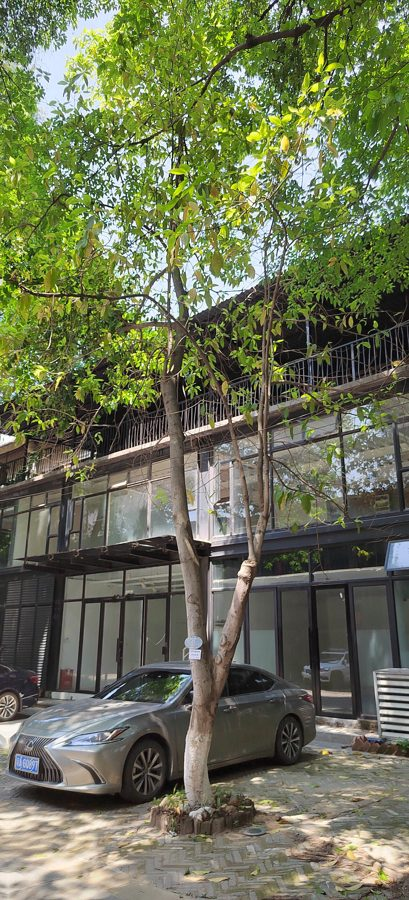

गोबलाHairy Fig
Ficus hispida · Moraceae · FLR-0296

- Scientific name वैज्ञानिक नाम
- Ficus hispida L.f.
- Family कुल
- Moraceae
- Hindi हिंदी
- गोबला
- Local names स्थानीय नाम
- gobla, kathgular, hairy fig, ficus hispida
- Status here यहाँ की स्थिति
- native
- Movement आवागमन
- Resident, here all year
- Known from कहाँ दर्ज
- Others have published records from the Basti–Ayodhya districts बस्ती–अयोध्या के ज़िलों से दूसरों के प्रकाशित अभिलेख
- IUCN IUCN
- not evaluated
- Review समीक्षा
- audited and independently read
When to look कब देखें
Present all year. साल भर मौजूद।
Uses and possibilities उपयोग और संभावनाएँ
“Traditional medicine” means a documented traditional use, not a claim that it works. Nothing on this page is medical advice.
Drawn from the documented uses in the profile below, where each is labelled traditional, current or a research lead. All uses →
Tell it apart from इनसे अलग पहचानें
गोबला / Hairy Fig
Ficus hispida L.f. — Moraceae
गोबला — एक मध्यम आकार की अर्ध-सदाबहार झाड़ी या छोटा पेड़ जो जंगलों के किनारों, नदियों के साथ और गाँव के बेकार इलाकों में उगता है। पत्तियाँ खुरदरी, ऊँची-नीची सतह वाली, अंडाकार होती हैं। फल छोटे, गोल, पीले या नारंगी रंग के, पूरे साल लगते हैं, जो पक्षियों और जानवरों को बहुत पसंद होते हैं। पत्तियों पर और फलों पर बारीक बाल होते हैं, जिससे इसका नाम "गोबला" पड़ा।
Quick Identification त्वरित पहचान
| Feature | Description |
|---|---|
| Size | Small to medium semi-evergreen tree/shrub, 4–10 m tall |
| Leaves | Ovate to elliptic, 8–15 cm, rough surface, hairy, margins slightly lobed or entire |
| Fruit | Small globose figs, 1–1.5 cm diameter, yellow or orange when ripe |
| Bark | Pale brownish, smooth initially, becoming rough with age |
| Fruits | Produced throughout the year; clustered on old wood |
| The test | Small yellow figs and rough, hairy leaves with fine pubescence identify it |
Field tip: Along river banks and at forest edges, look for a small tree bearing small yellow or orange figs year-round. The leaves are distinctly hairy and rough to the touch. Birds and other wildlife feed heavily on the fruits.
हिंदी — कैसे पहचानें: पत्तियाँ खुरदरी और बालों से भरी। छोटे पीले-नारंगी अंजीर पूरे साल। पक्षियों के झुंड फल खाते हैं।
Morphology आकारिकी
Biometrics (wild and cultivated forms, eastern India):
| Measurement | Range |
|---|---|
| Height | 4–10 m |
| Trunk diameter | 10–40 cm |
| Leaf length | 8–15 cm |
| Leaf width | 5–10 cm |
| Fig diameter | 1–1.5 cm |
Trunk and bark: Pale brown, smooth, becoming rough and slightly flaking with age. Wood pale, soft.
Leaves: Alternate, ovate to elliptic, 8–15 cm long, 5–10 cm wide. Surface distinctly rough (hispid) with fine pubescence. Margin entire or slightly lobed, especially on young growth. Petiole 1–2 cm, pubescent.
Figs (inflorescences): Small, globose, 1–1.5 cm diameter, axillary, produced singly or in pairs from the leaf axils. Colour yellow-green, turning yellow or orange when ripe. Produced throughout the year, with peaks in monsoon and post-monsoon.
Pollination: Pollinated by tiny fig wasps (Ceratosolen spp.), though many fruits develop parthenocarpically (without fertilization).
हिंदी: पत्तियाँ खुरदरी, बालों से ढकी, अंडाकार। अंजीर छोटे, गोल, पूरे साल। लकड़ी नरम, हल्की।
Behaviour & Ecology व्यवहार और पारिस्थितिकी
Hairy Fig is a pioneer species of forest margins, riverbanks, and disturbed ground. It grows rapidly and is semi-evergreen, retaining leaves year-round except in severe drought. A key feature is the continuous production of fruit, which makes it highly valuable for frugivorous birds and mammals. The fruits are eaten by Indian Flying Fox, pied myna, Red-vented Bulbul and many other species. The tree coppices readily after cutting or damage.
हिंदी: जंगलों के किनारे और खराब जमीन में उगता है। तेजी से बढ़ता है। साल भर फल देता है जो पक्षियों का पसंदीदा भोजन है। नुकसान के बाद फिर से निकलता है।
Life Cycle / Phenology जीवन चक्र
| Month / season | Event |
|---|---|
| Year-round | Continuous fruiting; ripening cycles |
| January–March | Fruits ripen; active frugivore feeding |
| April–June | Fruiting continues; new leaf flush |
| July–September | Heavy fruiting during monsoon |
| October–December | Continued fruiting; drier conditions |
Seedlings germinate readily from bird-dispersed seeds. Growth is rapid; a young plant can reach 3–4 m in a single monsoon season. Lifespan reaches 30–50 years.
हिंदी: पूरे साल फल आते हैं। मई-जून में बहुत सारे फल। पक्षी बीज फैलाते हैं।
Associated Species / Interactions संबंधित प्रजातियाँ
- Frugivores: Indian Flying Fox, pied myna, Red-vented Bulbul feed on fruits.
- Wasp pollination: Fig wasps (Ceratosolen spp.) pollinate flowers.
- Companion species: Often grows with Jamun, Peepal and other riverside figs.
Pests and Diseases कीट और रोग
- Leaf-eating insects and beetles are minor pests.
- No significant fungal diseases in most conditions.
- The continuous fruiting supports rather than harms the tree.
Agricultural / Human Relevance कृषि प्रासंगिकता
Traditional and ethnobotanical use:
- Fruit consumption. Small figs are eaten fresh or cooked by local people, though less commonly marketed than larger fig varieties.
- Traditional medicine. Leaves and fruits are used in folk medicine for digestive complaints and skin conditions.
- Livestock fodder. Leaves are lopped for goats and sheep in the dry season.
Today. Primarily valued as wildlife food and for erosion control on river banks. Used in agroforestry and restoration.
Research direction (a lead, not a result). The year-round fruiting of Hairy Fig under different rainfall scenarios, and its role in sustaining frugivore populations during seasons when other fruit trees are dormant, would merit investigation.
हिंदी: अंजीर खाया जाता है। पत्तियाँ पशुओं को खिलाई जाती हैं। नदी के किनारे मिट्टी बचाता है।
Expected Locally स्थानीय रूप से अपेक्षित
Not a field record. Written from published accounts for eastern Uttar Pradesh. No confirmed local sighting yet — if you have seen it, that is what the atlas needs.
अभी तक स्थानीय पुष्टि नहीं। यह विवरण प्रकाशित स्रोतों से है, किसी अवलोकन से नहीं।
GBIF holds published records from Basti and nearby districts. Hairy Fig is expected in natural forest margins, along rivers and water courses, and in disturbed areas throughout eastern Uttar Pradesh. Look for the small tree bearing small yellow figs year-round, particularly visited by birds and bats.
Distribution वितरण
Global range: Found across tropical Asia from India to Australia, in rainforest and drier deciduous forest margins.
In India: Distributed widely in deciduous forests, forest margins, and cultivated areas from the plains up to about 1,500 m.
In Uttar Pradesh: Scattered in eastern deciduous forests and along riverbanks; cultivated in some gardens.
In Basti district / eastern UP: Expected in natural forest margins and along river courses; exact distribution not yet documented.
Research Questions शोध प्रश्न
- How many fig fruits does a single tree produce per month through different seasons? — Pick and count fruits from marked branches monthly.
- Which birds and mammals eat the fruits, and how many fruits does each species consume per visit? — Sit quietly beneath a fruiting tree and observe; record visitor species and feeding time.
- Does the continuous fruiting of Hairy Fig sustain frugivores during seasons when other fruit sources are scarce? / क्या गोबला के साल भर फल अन्य फलों की कमी के समय पक्षियों को पोषण देते हैं? — Compare fruit abundance of multiple tree species across seasons; track bird abundance accordingly.
- What is the dispersal distance of seeds by birds and bats? — Collect seeds from droppings of frugivores; map where seedlings establish.
- How long does a Fig wasp take to pollinate and develop inside a fig? — Open figs at weekly intervals; document wasp development.
Similar Species मिलती-जुलती प्रजातियाँ
| Species | How to tell apart | हिंदी |
|---|---|---|
| Peepal (Ficus religiosa) | Heart-shaped leaves (not rough), larger; sacred fig | दिल के आकार की चिकनी पत्तियाँ |
| Banyan (Ficus benghalensis) | Much larger, aerial roots | बहुत बड़ा, हवाई जड़ें |
| Cluster Fig (Ficus racemosa) | Fig fruits on trunk/old wood | पेड़ के तने पर फल |
Field rule: A small semi-evergreen tree with distinctly hairy, rough leaves bearing small yellow figs year-round is Hairy Fig.
Taxonomy & Classification वर्गीकरण
Original description. Originally described by Linnaeus as Ficus hispida in 1782 based on specimens from South Asia. Type locality is India.
Subspecies. Monotypic — no subspecies are currently recognised.
Family and order placement. Order Rosales, family Moraceae (the fig family). The genus Ficus contains about 800 species, mostly tropical, found on every continent except Antarctica.
Phylogenetic notes. Ficus hispida belongs to a clade of Asian figs characterised by small fruits and year-round reproduction.
IUCN status rationale. Not evaluated. Widespread and common in suitable habitats; not threatened.
Photo Gallery फोटो गैलरी
No photos yet — add field photos to media/species/hairy_fig/ and run node scripts/sync_photos.js.
Wanted photos:
- Whole tree at forest margin
- Hairy leaves with rough surface
- Small yellow figs on branch
- Ripe orange figs
- Birds feeding on figs
- Fruiting pattern through seasons
References संदर्भ
- Linnaeus, C. (1782). Supplementum Plantarum. Impensis Orphanotrophei, Brunsvigae. p. 441.
- Hooker, J.D. (1888). The Flora of British India. Vol. 5. L. Reeve & Co., London.
- Duthie, J.F. (1903). Flora of the Upper Gangetic Plain and of the Adjacent Siwalik and Sub-Himalayan Tracts. Vol. 3. Government Printing, Calcutta.
- Wight, R. (1894). Icones Plantarum Indiae Orientalis. Madras.
- Sahni, K.C. (1998). The Book of Indian Trees. Oxford University Press, New Delhi.
- GBIF Occurrence Data — Ficus hispida, India.
Source file: species/flora/trees/hairy_fig.md